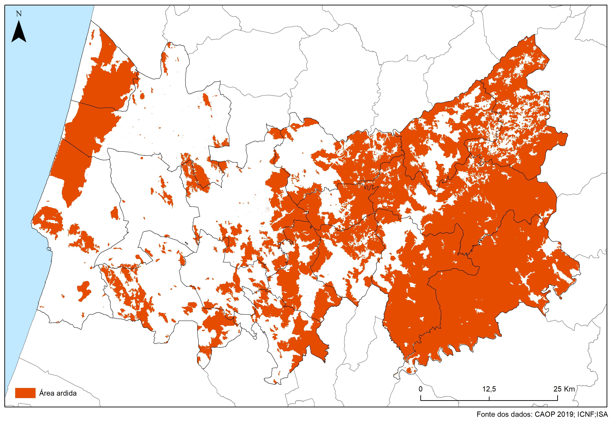
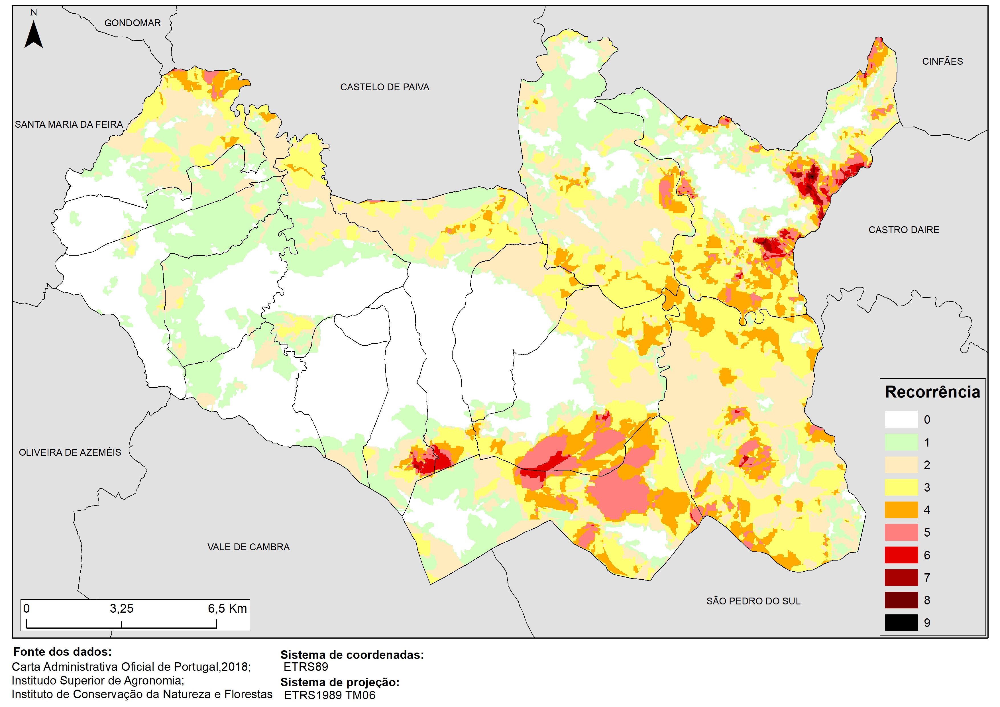
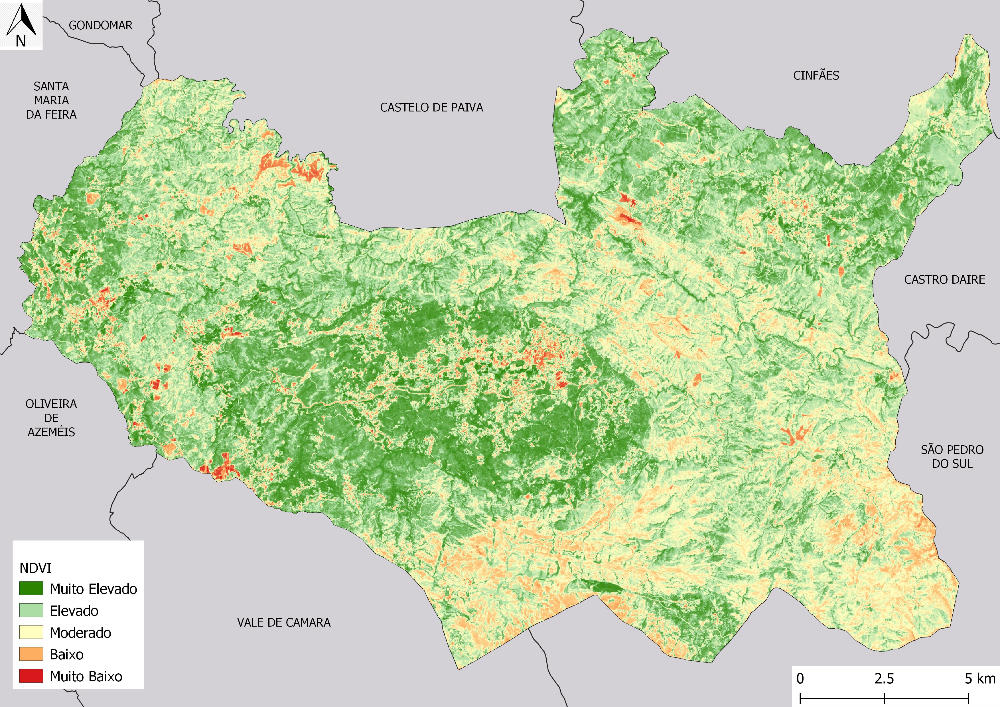
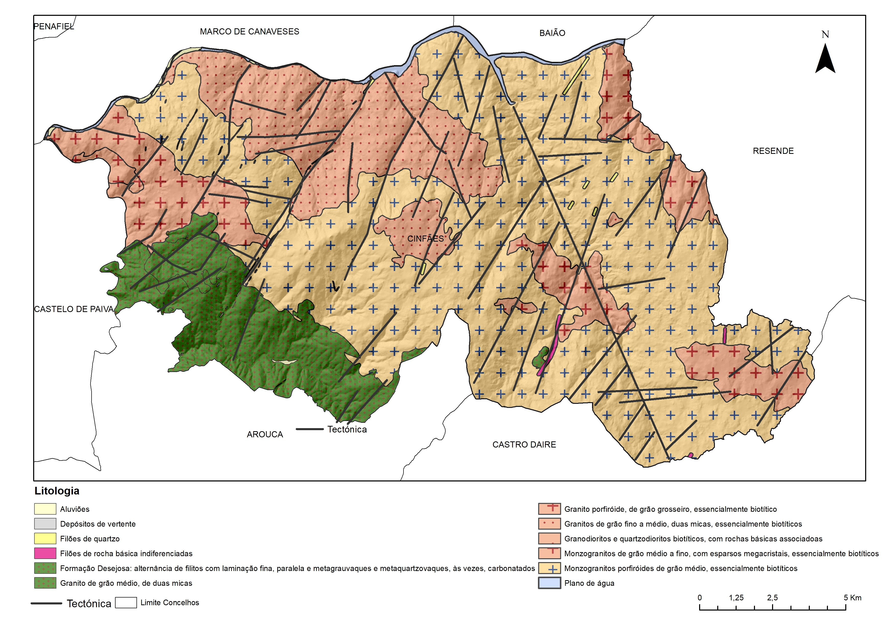
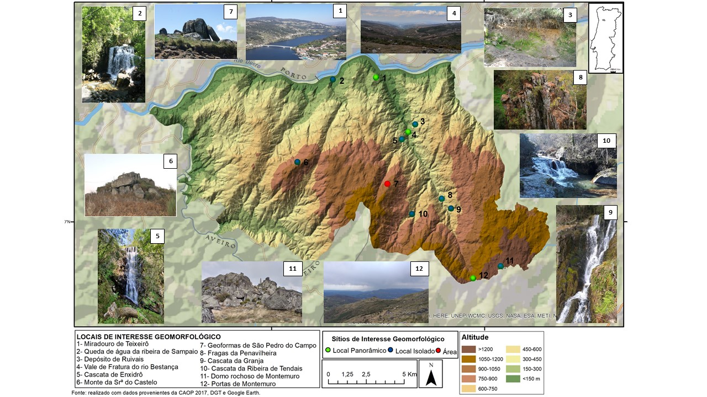

01 / 10

Carta de Ocupação do solo (COS2018), no distrito de Coimbra.
02 / 10

Área ardida, entre 1975 e 2019, no distrito de Coimbra.
03 / 10

Carta de risco de incêndio rural do distrito de Coimbra.
04 / 10

Recorrência dos incêndios, entre 1975 e 2017, no município de Arouca.
05 / 10

Suscetibilidade aos incêndios rurais no município de Arouca.
06 / 10

Normalized Difference Vegetation Index (NDVI), em agosto de 2019, no município de Arouca.
07 / 10

Ocupação do solo (COS2018) dos concelhos abrangidos pelo Ultra Trail Serra da Freita - 100km e tipos de percurso.
08 / 10

Polo habitacional e tecnológico no município de Torre de Moncorvo.
09 / 10

Litologia e tectónica do município de Cinfães.
10 / 10

Localização geográfica de locais de interesse geomorfológico no município de Cinfães.
❮
❯